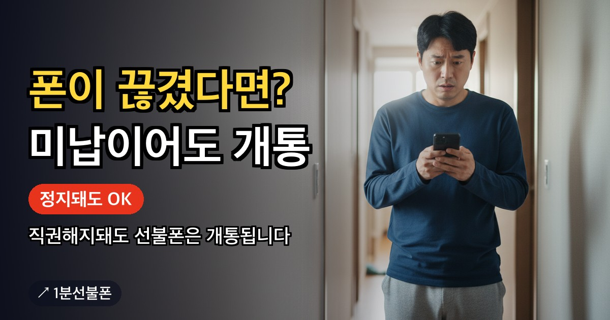

일요일이라도 새 번호를 받는 신규가입이라면 앤텔레콤 선불 셀프개통은 08:00~21:50 사이에 할 수 있습니다. 반면 쓰던 번호를 그대로 옮기는 번호이동은 일요일·신정·설·추석 당일에는 셀프개통이 되지 않습니다. 그래서 일요일에는 새 번호로 오늘 열지, 번호이동을 다음 날로 미룰지부터 정하고, 유심과 간편인증서를 손에 쥔 뒤 시작하는 것이 순서입니다. 일요일 하루 안에 끝내려면 무엇을 챙기고 어디까지 해 두어야 하는지 차례로 정리했습니다.
- 일요일에도 신규가입(새 번호) 셀프개통은 08:00~21:50 사이에 가능
- 번호이동(쓰던 번호)은 일요일·신정·설·추석 당일 셀프개통 불가, 다음 날 10:00~19:50에 신청
- KT망 유심은 민트색 바로유심이고 CU·GS25·이마트24에서 판매
- LG U+망 유심은 검은색 모두의원칩이고 이마트24·B마트·지하철 역 자판기에서 판매
- 본인 명의 간편인증서(웹은 토스·카카오 등)가 있어야 비대면, 유심이 있으면 5분
- 개통한 날 안에 충전, 웹 개통이면 그날 안에 오는 해피콜(공휴일 제외)을 받아야 함
일요일에 열 수 있는 가입과 열 수 없는 가입
일요일에 휴대폰을 새로 열 때 가장 먼저 갈리는 것은 가입 유형입니다. 새 번호를 받는 신규가입은 셀프개통 시간 08:00~21:50 안이라면 일요일에도 진행할 수 있고, 쓰던 번호를 옮겨 오는 번호이동은 일요일 하루 동안 셀프개통을 받지 않습니다.
| 가입 유형 | 셀프개통 시간 | 일요일에는 |
|---|---|---|
| 신규가입(새 번호를 받음) | 08:00~21:50 | 가능 |
| 번호이동(쓰던 번호를 유지) | 10:00~19:50 | 불가 — 신정·설·추석 당일도 같음 |
그러니 일요일에 「오늘 안에 번호 하나가 필요하다」면 신규가입으로 가는 것이 현실적인 길입니다. 다른 요일과 공휴일까지 함께 비교한 시간표는 선불폰 셀프개통 시간 글에 따로 정리돼 있습니다.
일요일 아침에 손에 쥐어 둘 두 가지, 유심과 간편인증서
일요일 셀프개통은 준비물만 갖춰져 있으면 혼자 끝낼 수 있습니다. 신청 화면을 열기 전에 아래 두 가지를 먼저 확인하세요.
- KT망(K망) 유심 — 민트색 포장의 바로유심입니다. CU·GS25·이마트24에서 살 수 있습니다.
- LG U+망(L망) 유심 — 검은색 포장의 모두의원칩입니다. 파는 곳은 이마트24·B마트·지하철 역 자판기입니다.
- 유심값 — 편의점 유심은 6,600~8,800원이고 요금제와 따로 듭니다.
- 본인 명의 간편인증서 — 웹(앤플랫폼)으로 개통하면 토스·카카오 등의 간편인증서를 씁니다. 비대면 개통에는 신분증을 찍어 올리는 단계가 없습니다.
유심이 없다면 신청 페이지 안에서 택배나 퀵 배송으로 받을 수도 있지만, 일요일 하루 안에 개통까지 마치려면 유심을 먼저 구해 두는 쪽이 계획을 세우기 쉽습니다. 다른 통신사에서 쓰던 유심은 앤텔레콤에서 다시 쓸 수 없으니 새 유심을 준비하세요. 미납·연체·신용불량이어도 본인 명의로 개통할 수 있고, 신용조회 없이 진행됩니다. 간편인증서가 없다면 비대면 개통은 할 수 없고 센터 방문 개통으로 가야 합니다.
일요일에 쓰던 번호를 옮기고 싶다면 고를 길 두 가지
쓰던 번호를 그대로 가져오고 싶은데 오늘이 일요일이라면 셀프개통으로는 오늘 옮길 수 없습니다. 이때 고를 수 있는 길은 두 가지입니다.
- 오늘은 새 번호로 연다 — 신규가입으로 08:00~21:50 사이에 셀프개통합니다. 번호는 새로 받게 되므로, 쓰던 번호를 꼭 유지해야 하는 사람에게는 맞지 않습니다.
- 번호이동은 다음 날로 미룬다 — 월요일 10:00~19:50 사이에 번호이동으로 신청합니다. 다음 날이 신정·설·추석 당일이라면 그날도 번호이동 셀프개통이 되지 않으니 날짜를 한 번 더 확인하세요.
번호이동을 미룬 경우에도 일요일에 유심과 간편인증서를 준비해 두면 다음 날 시간 안에 서두르지 않고 진행할 수 있습니다. 번호이동 인증은 하루 7회까지만 시도할 수 있고, 7회를 넘기면 그날은 더 진행할 수 없어 다음 날 다시 해야 합니다(FAQ Q55). 기존 통신사 해지와 번호이동에서 걸리는 다른 제한은 선불폰 번호이동 글을 참고하세요.
일요일 셀프개통, 21:50 마감에 맞춘 진행 순서
일요일에 신규가입으로 셀프개통할 때는 아래 순서로 진행합니다. 유심이 있으면 5분이면 끝나지만, 막히는 단계가 생길 수 있으니 마감 직전보다는 여유 있게 시작하세요.
- 신청 페이지에서 가입 유형을 신규가입으로 고릅니다.
- 안면인증과 본인인증을 진행합니다.
- 가지고 있는 유심의 정보를 입력하고 요금제를 고릅니다. 약정 없는 선불 요금제는 12,100원부터입니다.
- 마지막에 개통하기를 누르면 웹 개통은 별도 승인요청 없이 완료됩니다.
21:50까지 셀프개통을 마치지 못하면 이어서 하는 것이 아니라 다음 날 처음부터 새로 해야 합니다(FAQ Q23). 2026년 10월부터는 안면인증을 반드시 통과해야 개통할 수 있습니다. 형광등 빛이 화면이나 얼굴에 반사되지 않는 자리에서 하고, 고개를 돌릴 때는 시선도 고개와 함께 돌리세요.
미성년자·법인·30일 안에 앤텔레콤 번호를 해지한 경우는 요일과 관계없이 셀프개통 대상이 아니어서 센터 방문이 필요합니다. 외국인은 앤플랫폼(비대면)에서 여권으로 개통할 수 없어 센터 방문 개통으로 진행합니다. 단계별 화면 설명은 선불폰 셀프개통 글에 있습니다.
일요일에 개통을 마친 뒤 그날 밤까지 할 일
- 확인 전화 받기 — 웹으로 개통하면 그날 안에 본사 확인 전화(해피콜)가 옵니다(공휴일 제외). 받지 못하면 번호가 해지될 수 있으니 개통한 날은 휴대폰을 가까이 두세요.
- 개통한 날 안에 충전 — 개통한 날까지 요금 충전이 되어 있어야 하고, 하지 않으면 다음 날 번호가 정지되거나 해지될 수 있습니다(FAQ Q52). 자세한 내용은 선불폰 개통 당일 충전 글을 보세요.
- 앱(앤스마트)으로 개통했다면 — 태블릿소유자 회원번호 2772872를 넣고 개통신청을 누른 뒤, 1분선불폰 카카오톡 채널로 승인요청까지 해야 개통이 완료됩니다.
일요일 저녁 늦게 개통을 마쳤다면 충전까지 그날 안에 끝낼 시간이 남는지 미리 따져 두는 것이 좋습니다. 가입 유형별 준비물 전체는 개통 방법 안내에서 다시 확인할 수 있습니다.
자주 묻는 질문
일요일 밤 9시에 시작해도 새 번호를 받을 수 있나요?
신규가입 셀프개통은 21:50까지라 시간 안에 끝내면 됩니다. 유심이 있으면 5분이지만 안면인증이나 본인인증에서 막히면 시간이 모자랄 수 있고, 21:50까지 마치지 못하면 다음 날 처음부터 다시 해야 합니다.
일요일에 지금 쓰는 번호 그대로 옮겨 올 수 있나요?
번호이동 셀프개통은 일요일에는 되지 않습니다. 오늘 새 번호로 신규가입하거나, 다음 날 10:00~19:50 사이에 번호이동으로 신청하세요. 다음 날이 신정·설·추석 당일이면 그날도 번호이동 셀프개통은 되지 않습니다.
일요일에 개통하려면 유심은 어디서 사면 되나요?
KT망이라면 민트색 바로유심을 CU·GS25·이마트24에서 살 수 있습니다. LG U+망이라면 검은색 모두의원칩을 이마트24·B마트·지하철 역 자판기에서 구합니다. 가격은 6,600~8,800원입니다.
일요일에 개통하면 본사 확인 전화는 언제 오나요?
안내된 기준은 웹으로 개통하면 그날 안에 본사 확인 전화(해피콜)가 오고, 공휴일에는 오지 않는다는 것입니다. 받지 못하면 번호가 해지될 수 있으니 개통한 날에는 휴대폰을 곁에 두세요.
간편인증서가 없으면 일요일에는 개통을 못 하나요?
본인 명의 간편인증서가 없으면 요일과 관계없이 비대면 개통은 할 수 없고, 센터 방문 개통으로 진행합니다. 방문할 때는 실물 신분증을 챙기고, 방문 시간은 센터 찾기에서 예약을 신청한 뒤 안내를 받으세요.
같이 보면 좋은 글
미성년자 선불폰 개통 — 셀프개통은 안 되고 보호자가 센터에서 접수합니다
자녀 이름으로 선불폰을 만들어 주려는 보호자가 먼저 알아야 할 것은 개통 방식입니다. 앤텔레콤 안내에서…

외국인 선불폰 개통 — 센터 방문으로 진행하는 순서와 준비할 것
외국인이 선불폰을 개통할 때 가장 먼저 확인할 것은 방식입니다. 앤텔레콤 안내에서 외국인(여권)은 셀프개통…
세컨폰 개통, 공기계와 유심이면 충분합니다
중고거래·구직·서비스 인증처럼 개인 번호와 분리해서 쓸 두 번째 번호가 필요하다면, 약정 없는 선불폰으로…

핸드폰 미납 정지, 폰이 끊겼을 때 지금 쓸 번호 만들기
핸드폰 요금을 오래 밀리면 이용정지를 거쳐 직권해지로 이어질 수 있습니다. 해제까지는 시간이 걸리는데, 그…
최종 업데이트: